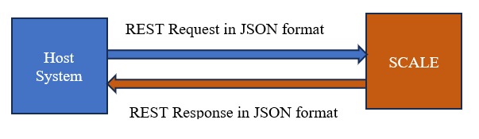
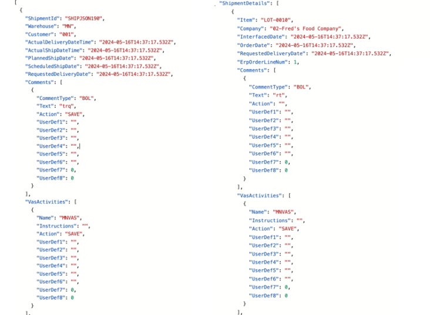
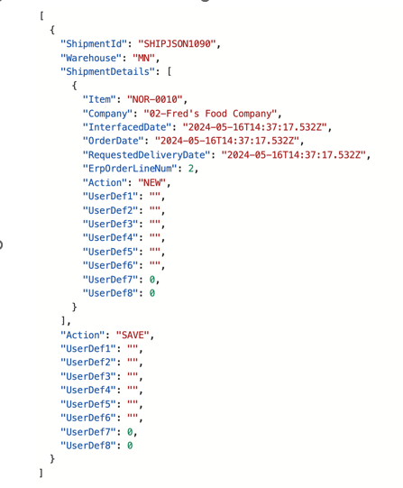
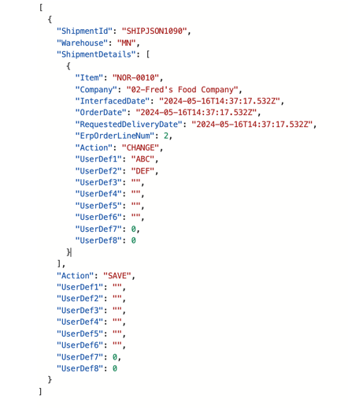

SCALE is now enhanced to support JSON interface with newly added API to facilitate Item download, Shipment download, and Receipt download functionality. These APIs can accept JSON-formatted requests and in return, provide JSON-formatted responses.

The following can be downloaded through a JSON payload by executing the new APIs.
Shipment Header
Shipment Detail
Receipt header.
Receipt detail.
Receipt container.
Item
Item UOM
Item Cross Reference
Purchase Order Header
Purchase Order Detail
Appointment scheduling
Serial Number
The Interface Mapping documented for JSON and SCALE is documented in the Excel. Download Excel.
The JSON Process of using the payload and downloading is detailed below:
1. Download the Sample Payload for Shipment. Click for Sample Payload
2. Update the payload sample with details. Enter any alphanumeric values that are mentioned as “string” and any numeric value for the fields that are mentioned as ‘0’ in the payload. For details on mapping fields, download mapping excel.
3. Navigate to the Swagger and open /scaleapi/InterfacesApi/Shipments-Downloaded
4. Copy the JSON and paste it swagger description model. Click Execute.
5. Navigate to the Planned Shipment Insight screen and view the downloaded shipment.
Note: The existing validations for Shipment XML download will also be applicable for JSON based shipment download.
The updated Payload JSON sample will be shown below
Examples
1. Shipment Details with one shipment line.

2. Add Shipment Line - Action ‘SAVE’ is used at the header level and action ‘NEW’ is used at the Detail level.

3. Update Shipment Line - Action ‘CHANGE’ is used at the detail level and action ‘SAVE’ is used at the Header level.
